Owning these areas of the product for a long time, I learned to weave the screens together to bolster each other–and improve off of feedback.
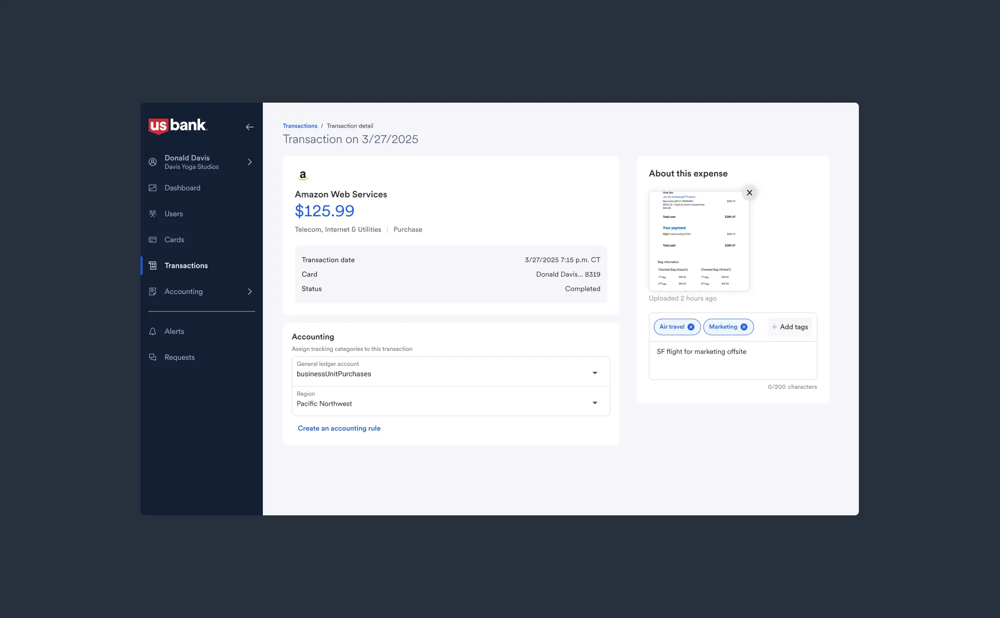
Our transaction page allows users to add info like tags and receipts, while also creating quick auto accounting rules.
We created an analytics page that collects info gathered from feature usage across the platform, and displays them to the account owner.
Reflection: Wins and Fails
🟢 Win: cross-functional collaboration
After being acquired, the amount of partners involved in our daily processes tripled. We used design as a means to bridge gaps between partners like Product and Compliance! Strong relationships let us continue to scale up and perform things like compliance review, developer handoff, and UX research.
❌ Fail: ambiguity slowed decision-making
With added decision-makers, there was added process and ambiguity. Some work took longer, with designs changing constantly. Knowing what I know now, I would have worked more proactively with product managers to identify our top priotities earlier.
🟢 Win: integrating into a complex system
At the end of the day, we adapted our small start-up product to the absolutely massive ecosystem of U.S. Bank. We changed our processes, fit into their servicing architecture, and even use their design system. I learned a lot about scaling small products to huge customer bases
150M+transactions secured
12K+businesses onboarded
$8.3KAvg monthly spend via platform
Responsive data tables
Our users work with large, dense datasets: transactions, cards, users, limits. On tablets and mobile, we needed to continue to show important info despite limited space.
For those screens, I removed decorative icons and changed to a list format.
Truncated tables
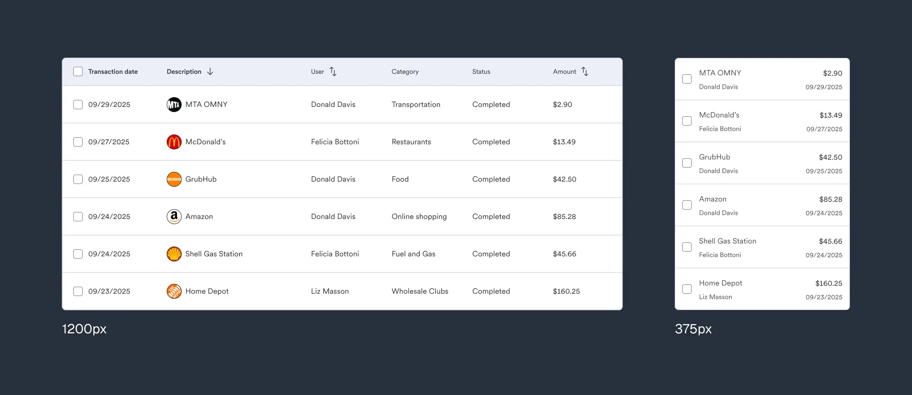
Prioritized columns
On some screens, users are allowed to customize the amount of columns that are shown. This helps accountants review dense amounts of info, but can obscure critical cells.
I used a sticky column to make our Card actions visible at all times.
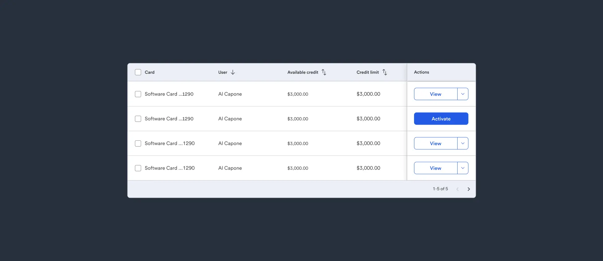
Filtering
I stored our many filter options inside a collapsible sidesheet for quick access.
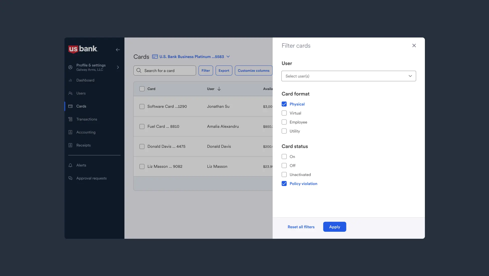
Impact
With a few techniques applied, we unlocked clearer and faster data scanning for our power users. Additionally, mobile usage for heavy table access on the go became possible!
Making long forms digestible
Our product included a lot of long forms involving sensitive data like social security numbers (SSN), credit limits, and more. Here's an example showing our Add User / Add Card flow.
On other banking platforms, this process can take up to 10 minutes. I used a variety of UX fundamentals to make the flow more scannable, boosting comprehension and reducing drop-off rates.
Grouping
I first sat in a discovery session with PM and engineering, to find out what inputs were required to create a new card.
Then, we broke the form into logical steps, grouping inputs that were related.
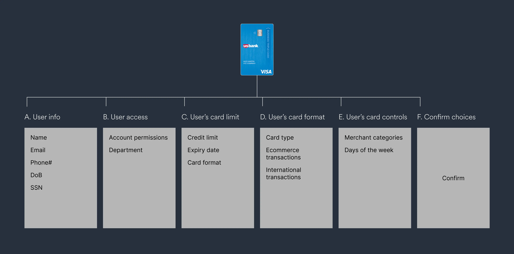
Progressive disclosure
For advanced options like our User Permissions (available only to users selected as administrators), I hid UI until it was needed.
Form structure
To boost scannability overall, I followed basic rules around visual comprehension: using left-aligned content, high contrast labels and replaced dropdowns with simpler components where possible.
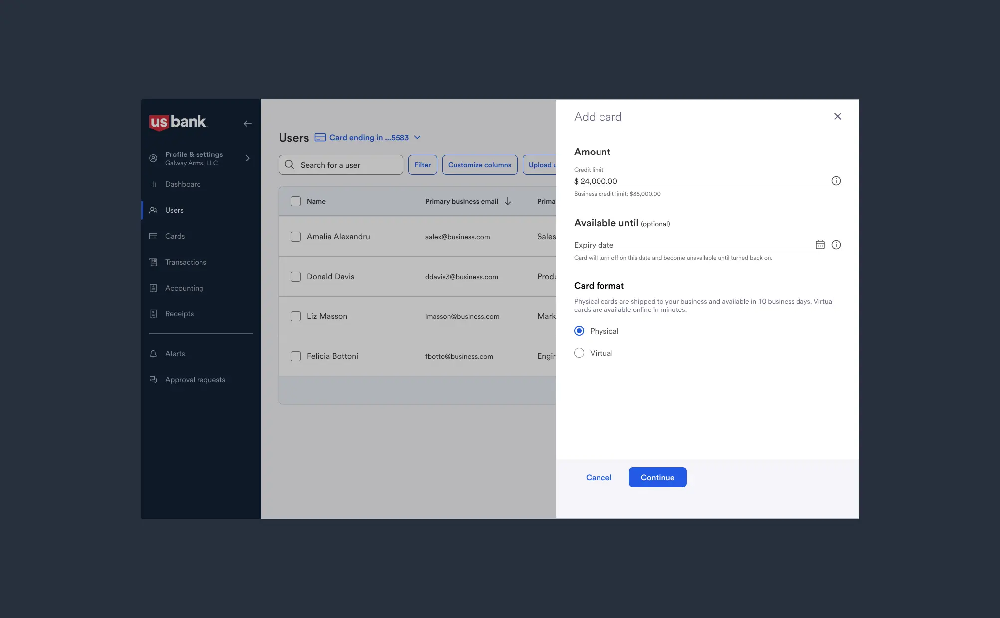
Confirm or edit
At the end of the flow, users can review their choices, and either confirm or change them. This stopgap allows users to avoid mistakes before a high-commitment action like requesting a credit card.
Final output
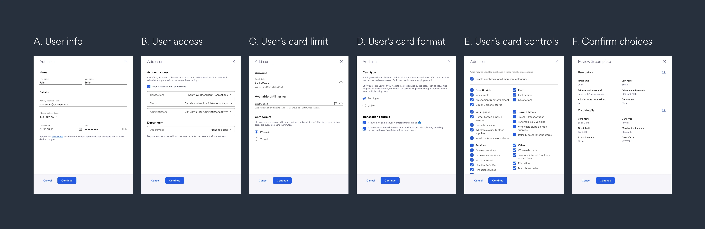
With the form completed, users can manage those options on the Card Details page that's generated using that form info.
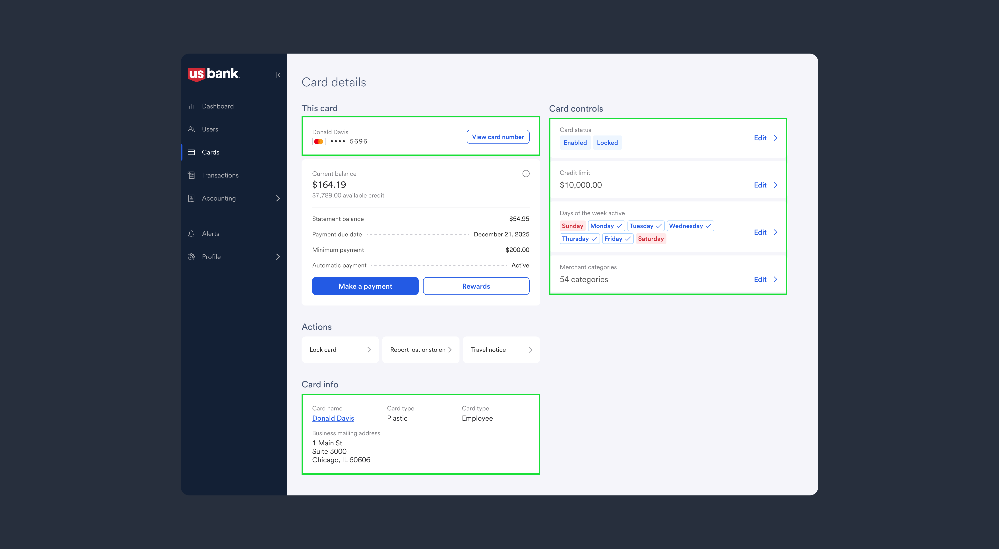
In testing, this flow performed successfully against similar U.S. Bank flows, getting a usability score of 6.3/7 and being completed in typically under 2 minutes!
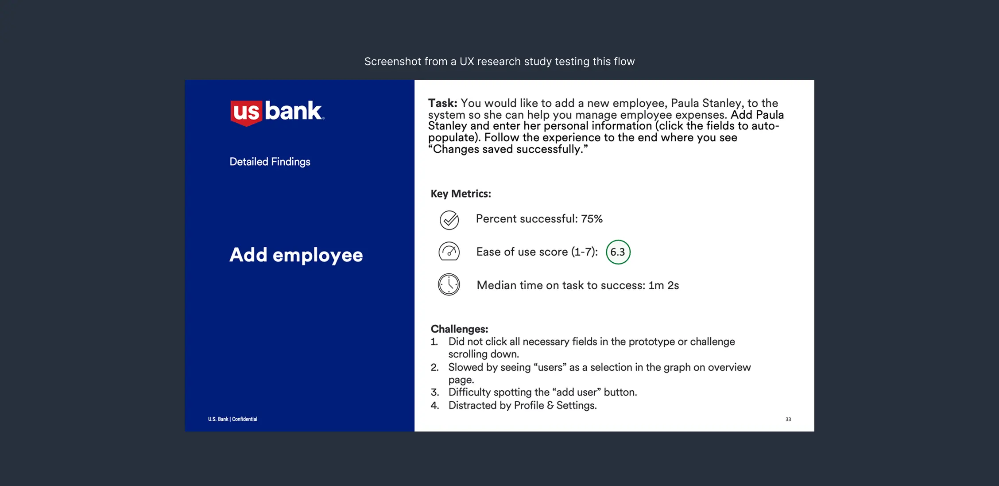
Safely displaying financial info
Banking is a high-regulation industry. Success in UX here means mitigating fraud and protecting info, all while keeping experiences lightweight as possible. In Spend Management, users can view their credit card numbers in the app.
Planning
To begin, this was a collaboration with compliance, product, and content writing. We scheduled a discovery session to find out what our "mandatories" were, in order not to miss any steps. They were:
- required one-time password (OTP) upon request
- more than one way to verify identity
- a series of checks to ensure the user has adequate permission
- clear direction on why a card could not be accessed, if rejected
How it turned out
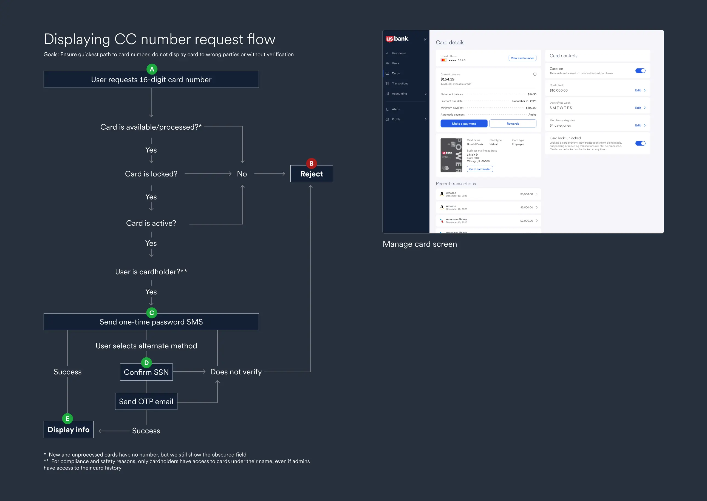
Despite the flow having many checks and pathways to rejection, we obsured this complexity from the user. Working with our content writer was key to making things clear to the user: requests can be rejected for many reasons (card locked, is processing, random back-end errors).
To help, I created prototypes with our writer's content that allowed compliance reviewers to go over everything in detail.
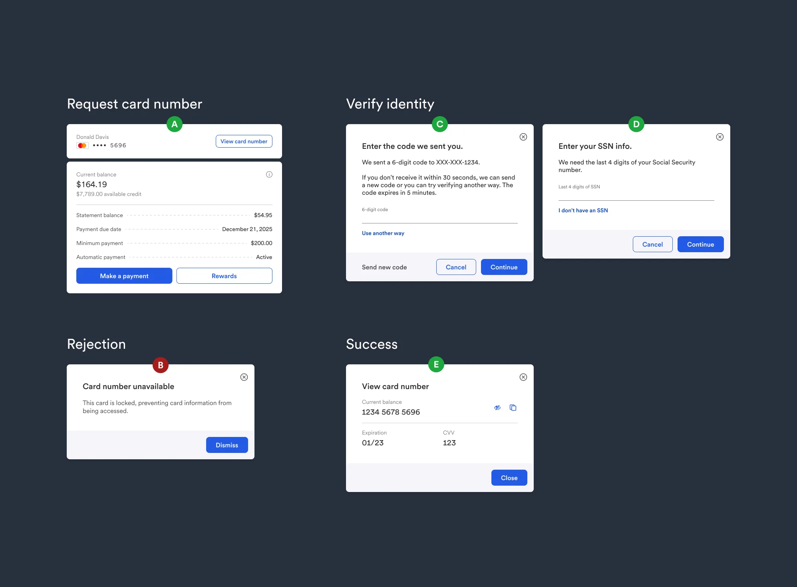
Developer handoff process
To me, ensuring a great handoff means eliminating ambiguity for developers.
What it looks like
As an example, I created an analytics dashboard that housed several data-heavy modules. I then created a series of docs that compartmentalized the work, so that each piece could be discussed. These docs contain:
- itemized list of changes, with Jira ticket links
- edge cases and error handling
- interaction notes
- all required assets and content
How I communicate developer docs
Collaboration is key here. I accompany these detailed docs with pair reviews, annotated flows, and prototypes. The timeline is something like this:
- confirm sign-off with PMs and executive stakeholders
- document work into developer docs
- schedule an initial session with all engineering parties, wait for questions to pour in
- host 1-1 pair sessions with developers working on specific items if needed
Here's a more granular example of how I detail interactions for micro displays, like our 'Quick Insights' section.
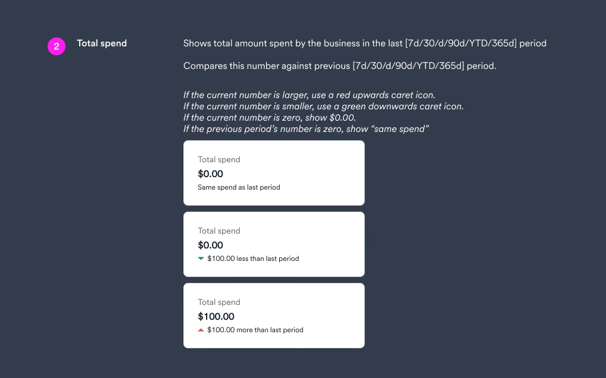
Impact
Great developer handoff means a better experience for everyone. They reduce ambiguity and let deeper discussions happen. That means:
- more efficient use of developer time
- more accurate results and easier QA
- clear and referenceable product decisions
Design system
Why:
U.S. Bank has an existing design system. However, our start-up product wasn't using it, post-acquisition. I audited our platform and worked with developers to integrate that system (Shield), swapping out dated and inconsistent components.
Scope:
Everything was on the table. At a base level, this meant changing fonts, colors, components. It also meant changing: core flows and assets, internal documentation, and improving accessibility.
Collaboration with engineering:
Working closely with our lead front-end engineer, we went through internal documentation for the existing design system: to see what we could use, and what we couldn't.
There were some easy wins, like 1:1 component replacement in buttons / typography / color tokens. There were some more complex use cases where existing components weren't applicable, like interactive tables and data charts. That required some custom design and advocacy for new work.
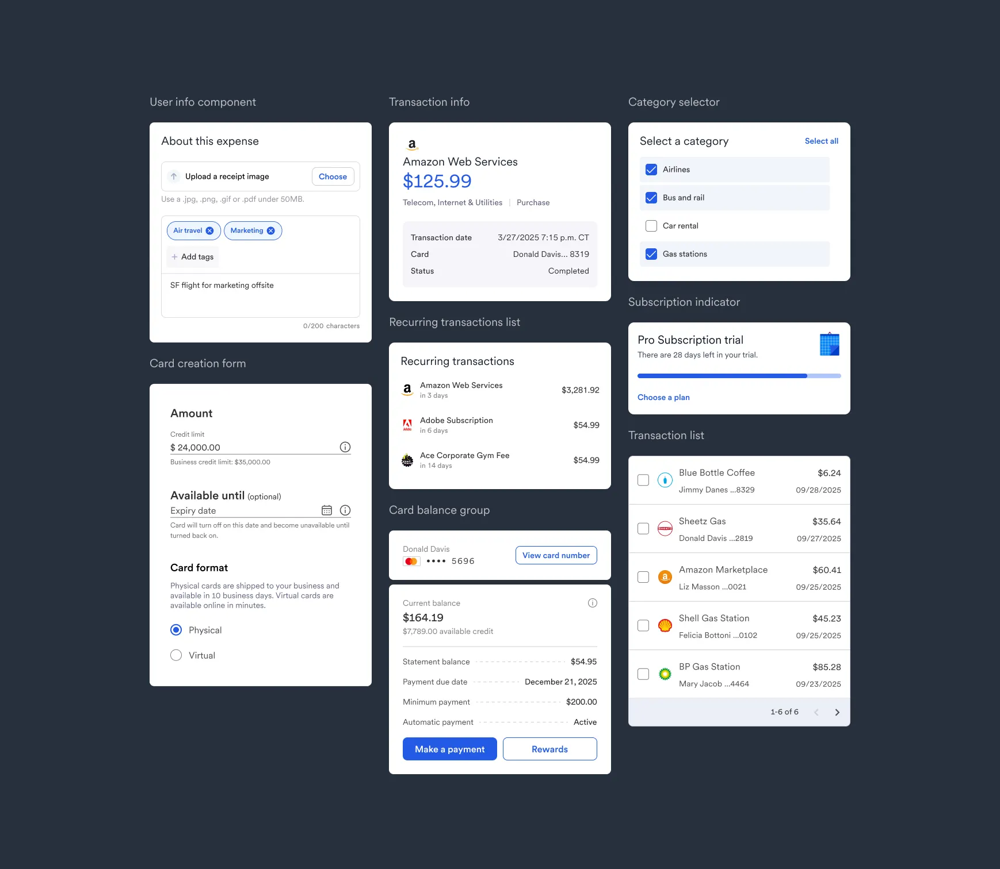
Impact:
- visual design consistency increased sharply
- work output across four front-end teams became more efficient and consistent
- there was less confusion for customers going from screen to screen